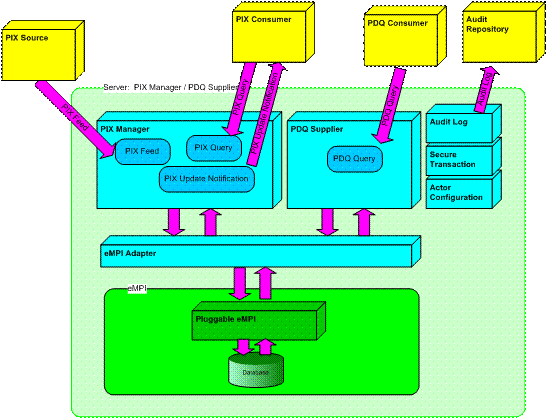

IHE (Integrating the Healthcare Enterprise) is an initiative by healthcare professionals and industry to improve the way computer systems in healthcare share information. IHE promotes the coordinated use of established standards such as DICOM and HL7 to address specific clinical needs in support of optimal patient care. Systems developed in accordance with IHE standards are better able to communicate with one another and empower care providers to use information more effectively. Please refer to the IHE site for more details.
PIX:
One of the core components of IHE IT infrastructure is PIX (Patient Identifier Cross-referencing). The PIX integration profile enables the cross referencing of patient identifiers from multiple patient identifier domains by:
Please refer to Patient Identifier Cross Referencing on the IHE wiki for more details.
PDQ:
The PDQ (Pateint Demographics Query) integration profile lets applications query a central patient information server in order to retrieve patient demographics and encounter information.
Scope:
This project charter document depicts the components that are being developed for the server side implementation of PIX/PDQ, focusing on the PIX Manager and PD Supplier actors. Currently IHE supports both HL7 2.x standards and HL7 v3.0 standards for PIX/PDQ manager. In the first release of this project, HL7 v2.x transactions are supported, and HL7 v3.0 support will be added in future release.
OpenPIXPDQ:
OpenPIXPDQ implements four server side transactions associated with IHE’s PIX/PDQ integration profile.
In addition to the above, ATNA Audit Trail Log and TLS transaction are also implemented to secure PIX/PDQ transactions.
The PIX Manager and PDQ Supplier have an underlying eMPI that accesses patient matching algorithms and a patient data manipulation API for adding/updating/merging patients. The architecture for OpenPIXPDQ has a pluggable eMPI underneath and clients will have flexibility to use any other eMPI as well. A high-level architecture of OpenPIXPDQ is shown below.
The PIX Manager and PDQ Supplier are the two major server side actors. Four major transactions happen here:
In addition, there will be 3 auxiliary components, namely Audit Log, Secure Transaction and Actor Configuration. Audit Log is a client side implementation of ATNA profile, and provides an API to send logs to an Audit Trail Server. Secure Transaction, also specified by the ATNA profile, serves the 4 transactions of PIX Manager and PDQ Supplier. Actor Configuration is required to configure PIX Manager and PDQ Supplier.
One of the non-IHE components in this project is eMPI adapter which allows communication between the PIX/PDQ server and a pluggable eMPI. For each of the 4 PIX/PDQ Sever transactions, this adapter is invoked to provide a bridge for passing information to and from the eMPI. The eMPI component should provide basic functions such as add/update a patient, merge patients, search a patient by patient id and patient demographics. The current eMPI used by OpenPIXPDQ is OpenEMPI from the openhie project on Open Health Tools (OHT).